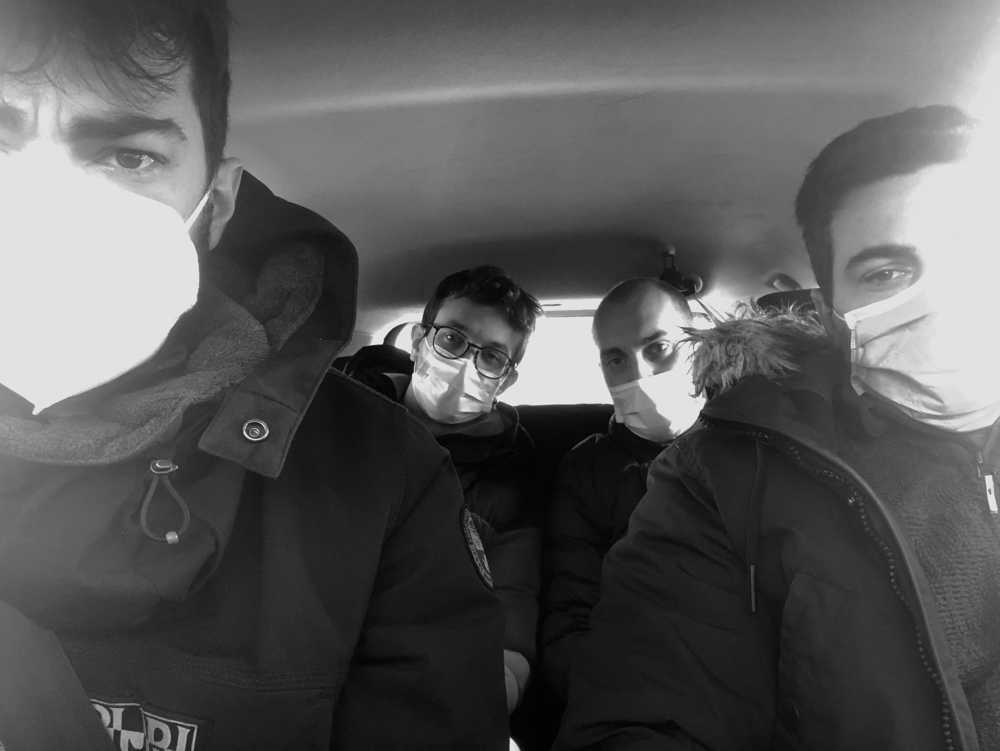

COS'È?
Questa è la storia di quattro ragazzi che hanno vissuto insieme & isolati a causa del COVID-19 per piu di un mese. La piattaforma li ha auitati a condividere dettagli medici e restare in contatto con i loro familiari ed amici. Buona lettura!
TAMPONE MOLECOLARE
+ RISULTATI
Riccardo Manfrè RILEVATO
Andrea Silvano RILEVATO
Stefano Chini RILEVATO
Paolo Ferrari RILEVATO
Riccardo Manfrè RILEVATO
Andrea Silvano RILEVATO
Stefano Chini RILEVATO
Paolo Ferrari RILEVATO
Riccardo Manfrè RILEVATO
Andrea Silvano RILEVATO
Stefano Chini NON RILEVATO
Paolo Ferrari NON RILEVATO
Riccardo Manfrè RILEVATO (DEBOLE)
Andrea Silvano RILEVATO
Riccardo Manfrè NON RILEVATO
Andrea Silvano NON RILEVATO
MISURAZIONE TEMPERATURA
REPORT GIORNALIERO
-
-
31 Gennaio
+ SCOPRI IL REPORT
Cari amici, oggi è la volta di un altro addio, quello di Ste. Alle ore 11:30, Stefano detto Steph, lascia la casa nelle sapienti mani di Simba e in quelle maldestre di Manfro. addio padron Stefano, Re delle terre di Birago, la tua presenza non ci allieterà più, né il tuo pomeridiano peregrinare sperso senza meta, né le tue “squisite” pietanze e neppure il tuo incomprensibile entusiasmo difronte alle cose più semplici. Che il tuo spirito aleggi per sempre tra le mura della casa … che i tuoi amici umani trovino conforto. Il pomeriggio si studia duro, cercando di non farsi vincere dalla nostalgia. Alle 19.30 ci aspetta un collegamento video (velcità x1.15) con il nostro amico e mentore Donin. Dopo una cena gentilmente offerta dalle cucine Manfrè, passiamo l’ultima parte della giornata in videochiamata con amici lontani, la cui mancanza si fa sentire ogni giorno di più. Prima di andare a letto investiamo le ultime forze rimaste, nella stesura dei report finendo a un’ora più che improbabile.
«[Sam] "Pensandoci bene, apparteniamo anche noi alla medesima storia, che continua attraverso i secoli! Non hanno dunque una fine i grandi racconti?"."No, non terminano mai i racconti", disse Frodo. "Sono i personaggi che vengono e se ne vanno, quando è terminata la loro parte. La nostra finirà più tardi… o fra breve."»
J.R.R. Tolkien
30 Gennaio
+ SCOPRI IL REPORT
Cari amici, per la prima volta in un mese Ste può godere della compagnia silenziosa e irritata di Manfro durante la colazione. Simba invece questa mattina, confuso dagli ultimi sviluppi, ha deciso di prendere parte al documentario di National Geographic sulle carcasse mangiate dagli avvoltoi. Giace esanime (privato della forza del coraggio, senza vigore, Treccani) nel letto fino all'arrivo di Ise. Il suo arrivo ridona vita a Simba e galvanizza Ste che decide di mostrare tutta la sua felicità divorando l'aperitivo gentilmente offerto da Ise. Ma i regali non sono ancora finiti: a salvare i due positivi rimasti, arrivano nuovamente Chino e Elda che decidono di regalare loro altri giorni di questa avventura. Mentre Ste decide di andare a migliorare la sua già straordinaria bellezza, Simba e Manfro, non ancora in grado di realizzare la portata del dono ricevuto, decidono di dedicare il pomeriggio alla pulizia di casa e giardino. La cena a base di pollo alla griglia è preludio di una incredibile partita a Mind in cui viene infranto ogni record. I tre ragazzi mostrano una connessione così elevata da arrivare al livello 12. Ritorna l'appuntamento con il cineforum: viene proiettato il film Soul al termine di cui nasce, come di consueto, un dibattito che sfocia in un vero e proprio scontro. La divisione e la tensione si trasformano con sacrificio e tenerezza in un dialogo autentico e genuino. Prendere sonno non è mai stato così facile.
«È meglio piangere che arrabbiarsi, perché la rabbia fa male agli altri mentre le lacrime scorrono silenziosamente attraverso l’anima e puliscono il cuore.»
GP2
29 Gennaio
+ SCOPRI IL REPORT
Cari amici, È la volta di Ste. Alle ore 9 al Mc di Comasina lo aspetta il suo tampone. Paolino si sveglia presto per dedicarsi allo studio mentre Manfro e Simba, rinvigoriti dall'esito positivo dal terzo tampone decidono di iniziare la giornata alle 12. In compenso non appena svegli non proferiscono parola fino alle ore 13 né con Paolino né con ste. Il pranzo ci rimette tutti di buon umore, ma appena finito Simba ripiomba nell’abisso, mentre Ste si dedica a quella che spera essere la sua ultima cromoterapia a Birago. Alle ore 18 Paolino lascia la casa. Che la sua memoria fotografica per i frutti di Wii Party, la sua luce intermittente, la sua ineguagliabile prestanza all’isola dei dadi e il suo spirito gentile possano per sempre accompagnarci e sostenerci. Restiamo TREpidanti (Tre perché siamo tasti in tre ... dai faceva ridere ... vi chiediamo scusa, deve essere l’astenia o la disperazione) in attesa dell'esito del tampone di Ste fatto dall'impiegato del McDrive di Comasina con una patatina. Ore 21. Le note del Main Theme di Star Wars annunciano ciò che Ste in cuore suo già conosceva: l’esito è negativo. Ste è un elfo libero. Le tenebre calano su Manfro e Simba, ma la chiacchierata a cuore aperto post cena riscatta gli animi lasciandoci andare a letto sereni, desti e pronti ad affrontare l'incerto futuro.
«Addio miei coraggiosi hobbit, la mia opera è terminata. Qui, infine, sulle rive del mare, si scioglie la nostra Compagnia. Non vi dirò ‘non piangete’, perché non tutte le lacrime sono un male.»
Gandalf
28 Gennaio
+ SCOPRI IL REPORT
Cari amici, la sveglia suona alle ore 8.00. Meda. Tampone. Pugilato. Tampone. Scavicchiamento. Tampone. Lacrime. Dolore. Casa. Attesa. Pranzo. Attesa. Siga. Attesa. Ore 18:00 esiti. Paolino lascerà la casa. Nonostante siano visibilmente sconfitti, Simba & Manfro grazie al sostegno dei loro migliori amici Gin & Tony (e anche Paolino e Ste) riescono a sottrarsi alla irrefrenabile voglia di infilare le dita nella presa della corrente. Rinvigorii da questo momento decidiamo di proiettare il film “The Conjuring II: Il caso Einfield”. Sconsigliamo la visione per una serie di indicibili motivi.
«Ah-ah-ah-ah Stayin’ Alive, Stayin’ Alive»
Bee Gees
27 Gennaio
+ SCOPRI IL REPORT
Cari amici, le giornate iniziano ad assomigliarsi. Non riusciamo più a distinguere n√© il giorno n√© il mese e nemmeno a ricordare ci√≤ che √® accaduto nei giorni precedenti. ¬´Abbiamo dimenticato il sapore del pane, il rumore degli alberi, la delicatezza del vento, abbiamo dimenticato‚Ķil nostro nome¬ª. Ricostruire gli avvenimenti dei gironi passati, cari lettori, sta iniziando a diventare davvero complicato. La giornata scorre inesorabile lasciando spazio solo ad un‚ÄôIsola dei Dadi serale, confidando che il riposo possa sconfiggere in maniera definitiva il virus ü§°.
«Non c’è nessuna possibilità…»
Manfro
26 Gennaio
+ SCOPRI IL REPORT
Cari amici, la routine dello studio è ormai una realtà ferrea di questo soggiorno a Birago, siamo grati che ogni tanto arrivano ventate di novità. Oggi è il giorno dell’untore, ci passa a trovare Scatto. Per farsi perdonare porta in omaggio viveri di ogni tipo che rallegrano la nostra giornata. Dopo molto tempo passato a chiacchierare decidiamo che il modo migliore per concludere la giornata è giocando a Mario Kart (dove, nonostante sia significamente inferiore rispetto gli altri concorrenti, Paolino ha la meglio). Ma è alla sera che il gioco si fa duro, è in programma Inter Milan, derby di Milano. Ritrovandoci un po’ in ritardo con le tempistiche decidiamo di adibire la cucina a “sky box” trasferendo il televisore a fianco del tavolo: siamo pronti per la partita. Menzione d’onore a Simba che entra in campo al 95’ e segna la punizione che porta la sua squadra in semifinale.
«Ma guarda che per tirare una punizione bene, bisogna anche essere in una condizione di serenità mentale. Lui sicuramente non lo è.»
Stefano Chini prima del gol di Eriksen
25 Gennaio
+ SCOPRI IL REPORT
Cari amici, lo studio rimane parte fondamentale delle nostre giornate qui a Birago: anche oggi ci dedichiamo totalmente ai nostri impegni. Dopo una giornata per così dire “standard” Ste e Manfro decidono che è il momento di dedicarsi anche un po’ allo sport, nello specifico nel ping pong indoor. Le partite sono molto sfoganti e i miglioramenti di Manfro sono significativi. Per cena Ste decide di riprovarci con un flan di formaggio. Tentativo ancora una volta disastroso. Dopo cena decidiamo di seguire un video collegamento e, finito quest’ultimo, andiamo a dormire.
«Ho provato, ho fallito. Non importa, riproverò. Fallirò meglio.»
Samuel Beckett
-
24 Gennaio
+ SCOPRI IL REPORT
Cari amici, la sveglia alla domenica, come possibile immaginare, risulta essere particolarmente impegnativa per tutti, ma nonostante questa difficoltà riusciamo comunque ad impostare la giornata in ritmi adeguati. Come oramai accade di consueto la giornata è arricchita da una visita insperata: il nostro carissimo amico Tarci. Non appena capisce che siamo rimasti senza acqua ti precipita a Birago con 2 confezioni di bottiglie per colmare questa mancanza e ne approfitta per lasciarci anche un cannonau da 15°. Nota negativa: Ste prova a cucinare una specialità piemontese (“Uova all’aurora”) ma toppa evidentemente le dosi e ne esce un pastone indescrivibile. Dopo questa esperienza molto provante per tutti decidiamo di farci una bella partita a carte dove Manfro vince in scioltezza.
«Una gallina è soltanto lo strumento usato da un uovo per fare un altro uovo»
Samuel Butler
23 Gennaio
+ SCOPRI IL REPORT
Cari amici, nonostante siamo in quarantena abbiamo deciso che questo weekend lo affronteremo come un normale giorno feriale in termini di sveglia e impegni giornalieri. La mattina dunque scorre come al solito: Manfro studia in sala, Paolino ripete in cucina, Simba progetta in camera e Ste si guarda le serie tv in camera sua. Dopo pranzo la novià: i nostri amici Ise&Sofi decidono di farci una sorpresa e ci vengono a trovare. Rispettando rigorosamente tutte le misure precauzionali, ci godiamo il momento e raccontando tutto quello che sta succedendo in questi giorni a Birago. Ma la visita è arricchita da un fatto inaspettato: i nostri amici ci hanno portato una consistente dose di approvvigionamenti direttamente spedita dalla nostra amica Cate. Tornati in casa dopo la visita possiamo constatare che il cibo è di ottima fattura, i prossimi giorni si prospettano pasti a base di lasagne, torta e tiramisù. Il cineforum prosegue e Paolino propone il suo film: “The Professor”. Voto = 0, sconsigliamo la visione.
«Sarebbe stata diventata famosa»
Stefano Chini
22 Gennaio
+ SCOPRI IL REPORT
Cari amici, anche questa mattina ci ridestiamo dal sonno, tutti pronti per affrontare la giornata. E con tutti intendiamo NON Manfro, che colpito dall’astenia post-esame decide di dare inizio alla sua giornata alle ore 13.00. La giornata prosegue liscia fino a sera tra studio e ping pong. Dopo cena, arriva un carico di approvvigionamenti da Paderno Dugnano gentilmente offerti dalla famiglia Ferrari caratterizzato da cannelloni e pasta pasticciata. Il cineforum non prosegue poiché Simba e Paolino si dedicano ad altri impegni, come diretta conseguenza Ste e Manfro ne approfittano per vedere un horror: “Lights out”.
«La prima creatura di Dio fu la luce»
Francesco Bacone
21 Gennaio
+ SCOPRI IL REPORT
Cari amici, stiamo migliorando sempre di più nelle sveglie mattutine, le giornate diventano più produttive; in più oggi per Manfro è un altro giorno importante: un esame lo attende. A pranzo, dopo una pasta ai pomodori secchi (dove abbiamo faticato a riconoscere il sapore dei pomodori) ha luogo una bellissima discussione, come al solito intensa, sul paradigma dell' IoT. Nel pomeriggio, mentre Paolino e Simba si dedicano allo studio, Manfro e Ste si dedicano ad un training di ping pong di qualche ora. È la sera del film di Ste che propone “Saving mr. Banks”.
«La prego taccia.»
P.L. Travers
20 Gennaio
+ SCOPRI IL REPORT
Cari amici, la giornata inizia con qualche difficoltà, soprattutto per il povero Manfro pesantemente colpito dall’astenia, ma, come ogni giorno, alla fine porta i suoi frutti sia in termini di studio che personali tra di noi. Oggi a pranzo ha luogo un favoloso dibattito (sul film proiettato la sera precedente) dove ci troviamo tutti molto implicati e interessati. Nel corso della giornata ci rendiamo conto che gli effetti dei cambiamenti climatici sono tangibili anche a Birago: in sala c’è una temperatura artica. Armato di buona volontà Manfro cerca di fronteggiare il freddo allestendo un fuoco di tutto rispetto. Dopo una cena stupefacente a base di pollo alla griglia (particolarmente apprezzato da tutti), concludiamo la giornata seguendo un video-collegamento al posto del nostro amato cineforum: la nostra soglia dell’attenzione è messa seriamente alla prova. Menzione d’onore al nostro amico Matteo che continua a farci compagnia con le sue chiamate serali.
«L’attenzione genera tutte le virtù, la distrazione tutti i vizi.»
Aaron Haspel
19 Gennaio
+ SCOPRI IL REPORT
Cari amici, è trascorsa un'altra giornata in quella che sta diventando la nostra “normalità”. Oramai siamo migliorati nella sveglia (c’è ancora margine ma si vedono dei progressi), lo studio è serrato mattina e pomeriggio e la sera ci dedichiamo al cinema. Le giornate sono oramai tutte caratterizzate da questo tema costante, in ogni caso però vi sono delle piacevoli note positive sempre. Ad esempio, oggi abbiamo ricevuto dei nuovi approvvigionamenti da Paderno Dugnano particolarmente apprezzati da Simba, Ste ha fatto un colloquio con un’azienda da cui è rimasto molto felice, Simba riesce sempre a trovare un modo per vedere i film proposti da lui. Infatti, oggi, dopo un gustoso hamburger, è riuscito a farci vedere un altro film a lui caro “A Beautiful Day in the Neighborhood”. Menzione di disonore a Paolino che si addormenta durante il film.
«L’abitudine è, fra tutte le piante umane, quella che ha meno bisogno di un suolo nutritivo per vivere e la prima a spuntare sulla roccia apparentemente più desolata.»
Marcel Proust
18 Gennaio
+ SCOPRI IL REPORT
Cari amici, oggi abbiamo in programma una piacevole gita fuori porta all’Auxologico di Meda per fare i tamponi di controllo. Siamo più sfortunati della prima volta, c’è una lunga coda che ci separa dai tamponi ma non ci facciamo scoraggiare e decidiamo di guardare degli spettacoli comici per passare il tempo. Finalmente ci siamo, il tampone è terribilmente fastidioso (come sempre) e, ancora una volta, riceviamo una profezia sull’esito, questa volta un po’ più enigmatica: “Alzate i finestrini e tenetevi il vostro covid in macchina”. Questa gita non ci ha stancato più di tanto, oramai l’astenia si fa sentire poco, perciò tornati a casa ognuno si dedica ai suoi impegni. Alle ore 18:30 riceviamo l’infausta notizia: tutti e quattro ancora positivi. Siamo un po’ scombussolati ma tutto sommato era prevedibile, cerchiamo di sdrammatizzare con un’isola dei dadi. Si respira amarezza nell’aria, questi tamponi hanno neutralizzato quella poca speranza che avevamo di tornare a casa, ma non ci diamo per vinti: come al solito ci affidiamo al cibo. Per rinfrancare gli animi cuciniamo una quantità di cotolette alla milanese che potrebbe sfamare un reggimento, grazie Manfro e Simba. La cena si accende grazie a Paolino che propone interessanti argomenti di politica che portano il consueto acceso confronto tra di noi.
«Il prezzo pagato dalla brava gente che non si interessa di politica è di essere governata da persone peggiori di loro.»
Platone
-
17 Gennaio
+ SCOPRI IL REPORT
Cari amici, oggi siamo tutti in vena di festeggiare la domenica: dopo una mattinata di studio seguiamo la messa delle ore 11:30. Abbastanza provati da un’omelia di soli 45’ rinfranchiamo gli animi con un pranzo sensazionale: pasta con zucca e guanciale accompagnata da “Amarone”. L’amarone ha conseguenze catastrofiche sul povero Ste che, per riprendersi, ha bisogno di un pisolino post pranzo di 2h, mentre gli altri, diligentemente, adempiono ai loro doveri universitari. La giornata è arricchita dalle consuete pulizie domenicali. Durante la cena, gustando un prelibato salmone, ci rendiamo conto che domani avremo il tampone di controllo, sapremo se siamo ancora positivi o meno. Paolino e Ste non hanno dubbi: sono disposti a rimanere positivi purchè l’Inter vinca contro la tanto odiata Juventus. Risultato finale: Inter 2 – Juventus 0; come andranno i tamponi di domani?
«Non c’è nessuna possibilità che domani saremo ancora positivi.»
Un clown
16 Gennaio
+ SCOPRI IL REPORT
Cari amici, il nostro studio continua secondo i consueti ritmi. Oggi la giornata porta un’incredibile novità: da Paderno Dugnano è in arrivo un nuovo approvvigionamento che include Salmone, colla, calcolatrice e pane. Manfro può finalmente dedicarsi alla restaurazione di antichità frantumate e, con stupore di tutti, il risultato è sorprendente. Stasera, dopo una scorpacciata di polpette caserecce, proiettiamo il film proposto da Paolino: “The Green Book”. Alla fine del film siamo tutti entusiasti della scelta: il film è un capolavoro.
Don Shirley: «È come suonare un campanaccio alla fine della VII di Shostakovich.»
Tony Lip: «Quindi ci sta bene?»
Don Shirley: «È perfetto, Tony.»
The Green Book
15 Gennaio
+ SCOPRI IL REPORT
Cari amici, dopo attente riflessioni abbiamo scelto che oggi sarà il nostro giorno libero: la sveglia non è nemmeno stata puntata. La giornata è completamente incentrata sul riposo. L’attività principale risulta essere, oltre ad una partita al trivial di Harry Potter (ovviamente vinta da Ste), lo studio del restauro di antichi manufatti: l’argomento sta molto a cuore a Manfro (to be continued). Dopo settimane di trattative infinite e discussioni di natura teologica Manfro e Ste sono riusciti finalmente a convincere i ragazzi sulla visione di un Horror. Perciò, dopo aver acceso il caminetto e blindato in via precauzionale tutta la casa, proiettiamo “Sinister”.
«È dolce riposare dopo aver compiuto il proprio dovere.»
Padre Pio
14 Gennaio
+ SCOPRI IL REPORT
Cari amici, Quattordicesimo giorno, è due settimane che siamo a Birago. Le giornate iniziano ad entrare in una sorta di routine: sveglia presto la mattina (non ci riusciamo mai), a pranzo si mangia un primo, a cena un secondo e dopo qualche “storia nera” o “isola dei dadi” cineforum. E’ evidente che però siamo tutti molto felici, questa convivenza risulta ogni giorno più incredibile, oggi ne è prova il bellissimo confronto che è nato dopo aver visto tutti insieme un assemblea su zoom. Galvanizzati dagli eventi Simba Paolino e Manfro, approfittano del fatto che Ste sia in chiamata con una sua carissima amica, meditano la frase del papa: non c’è festa senza vino e si scolano completamente una bottiglia di rosso e uno jegermaister. La serata quindi porta a tutti rivelazioni importanti sulla nostra convivenza.
«Chi non ha nulla da nascondere non ha nulla da temere.»
A.H.
13 Gennaio
+ SCOPRI IL REPORT
Cari amici, oggi tutto è pronto per il grande evento. Manfro ha il secondo parziale di calcolo. La sveglia suona alle 9. A quel punto non resta che aspettare le 11 interminabili ore fino all’ora “x”: le 18:00. Come se non fosse abbastanza all’ agonia del povero Manfro si aggiunge quella di ste e paolino difronte a una ridicola Inter che pur ritrovando uno dei suoi senatori, Andrea Ranocchia, fatica troppo con la Fiorentina. Come tutti si aspettavano l’esame di Manfro è andato una chiavica, ma non è una novità. Prendiamo la notizia con ironia e beviamoci su. La sera ci ritroviamo tutti abbastanza colpiti dalla solita astenia perciò scegliamo di vedere una puntata di “Black Mirror” per stemperare bene.
«Gli esami non hanno alcun valore. Se uno è un gentiluomo, ne sa abbastanza; se non è un gentiluomo, qualsiasi cosa sappia è per lui un male.»
Oscar Wilde
12 Gennaio
+ SCOPRI IL REPORT
Cari amici, la sveglia la mattina diventa uno scoglio sempre più insormontabile ma, aldilà dei problemi che riscontriamo al mattino, le nostre condizioni fisiche sono in continuo miglioramento: Paolino e Manfro iniziano a riacquistare il gusto e, a parte una generale astenia, nessuno di noi mostra altri sintomi. Oltre ai tutori della legge anche le ATS dimostrano il loro interesse nei nostri confronti. Menzione d’onore al momento in cui l’operatrice ATS al telefono con Manfro (Riccamaria Manfre per i registri sanitari della provincia di Milano) lo riconosce e dopo un breve momento di risate si mettono a chiacchierare delle sue innumerevoli quarantene. La giornata viene caratterizzata da una nuova scoperta: la carne non va messa a scongelare sopra il calorifero. I risultati ottenuti potrebbero rendere la carne simile a una carcassa abbandonata sotto il sole. La sera siamo troppo stanchi per i film di un certo spessore, perciò troviamo conforto in un capolavoro dell’animazione: Kung fu Panda.
«Vedo che hai trovato il sacro pesco della celestiale saggezza.»
Maestro Oogway
11 Gennaio
+ SCOPRI IL REPORT
Cari amici, continuiamo a faticare sull’orario della sveglia, solo Ste, imperterrito, riesce ad aderire all’iniziativa della sveglia mattutina delle ore 8:30. Nonostante le fatiche iniziali, la giornata di studio porta comunque i frutti sperati. La giornata prosegue coi soliti ritmi dettati dallo studio: Simba perennemente in call, Manfro e Paolino alle prese rispettivamente con “metodi” e “gastrologia” e Ste che prova a studiare Inglese. Siamo felici del rapporto che sta nascendo con i rappresentanti della giustizia i quali sono molto interessati a sapere dove siamo e come stiamo, che cari. Nota gastronomica: decidiamo che è il momento cimentarci nella napoletana arte della Pizza, oggi è stato preparato il famoso impasto a 48h di lievitazione (to be continued…). La serata cineforum viene rinviata al giorno successivo per un nuovo appuntamento.
«Tutto fa brodo»
Un vecchio saggio
-
10 Gennaio
+ SCOPRI IL REPORT
Cari amici, l’ordine del giorno è chiaro e incontrovertibile: la casa verrà pulita oggi. L’impresa di pulizia Chini Silvano ha dispensato dalle loro mansioni Paolino a Manfro per adempiere ai loro doveri universitari. Menzione negativa a Ste che, a metà lavoro si assenta per una chiamata, e lascia tutta la fatica a Simba, che conclude da solo. Prosegue la campagna di approvvigionamenti da parte dei nostri familiari. Quest’oggi il pacco è arrivato da Paderno Dugnano e porta con sé viveri e medicine. Seppur con il gusto abbastanza offuscato tutti abbiamo potuto riconoscere che la cucina materna è, e rimane tutt’ora, la migliore che possiamo desiderare. Dopo un acceso dibattito riguardo ai musical decidiamo che è il momento di guardare un cartone animato: la nostra scelta ricade su Onward.
«L’intelligenza non teme il confronto, lo spera»
Takumi Hiromasa
09 Gennaio
+ SCOPRI IL REPORT
Cari amici, dopo attente riflessioni abbiamo deciso che per investire al meglio il tempo in questi giorni è necessaria un’organizzazione mirata; per questo motivo abbiamo pensato di strutturare con orari precisi la giornata di studio. Seppur con qualche difficoltà e considerato che nella nostra situazione è accettata la “flessibilità dell’orario”, oggi riusciamo a rispettare queste linee guida: lo studio è intenso (escluso Simba completamente debilitato dall’astenia). Il pomeriggio porta due dolci novità. Da Buccinasco arrivano due tipi di approvvigionamenti: il primo, atto a soddisfare i palati più golosi (salamini, Raffaello, nutella biscuits…) e il secondo contraddistinto da una lettera marcata con logo di Hogwarts: si tratta dell’anelato Trivial Pursuit di Harry Potter, stasera si gioca! Un ringraziamento particolare ai nostri amici che continuano ad essere presenti nella distanza (ꓭM, IM) e a Manfro che, come solo lui è in grado di fare, nel tardo pomeriggio continua a deliziarci con graziosissime note dal pianoforte: STONKS.
«I tre segni di grandezza sono: generosità nel pianificare, umanità nell'esecuzione, moderazione nel successo»
Otto Von Bismarck
08 Gennaio
+ SCOPRI IL REPORT
Cari amici, oggi è il giorno della verità: alle ore 10:00 ci dirigiamo a fare i tamponi. Piacevolmente sorpresi dal servizio drive in dell’Auxologico di Meda, riceviamo una profezia sull’esito direttamente dalla dottoressa: ‘’il risultato arriverà entro sera, ma dai vostri occhi si capisce già che siete positivi’’. Tornati a casa ci rendiamo conto che la gita all’Auxologico ci ha reso del tutto simili a degli elementi di arredo. Dopo un power nap di circa 4 ore ci risvegliamo appena in tempo per consultare l’esito dei test molecolari, che confermano la profezia della dottoressa indovino. Entusiasti per il poker, decidiamo di investire le ritrovate energie e i nostri (di Ste) risparmi in vino.
«Non c’è festa senza vino»
Papa Francesco

07 Gennaio
+ SCOPRI IL REPORT
Cari amici, la produttività di oggi è stata sicuramente sotto la media. Già al risveglio erano visibili segni di stanchezza e affaticamento generale, in altre parole astenia. Ste e Paolino, partendo da un livello di temperatura di più di 37,5 sono stati i casi più critici, mentre simba e Manfro almeno ci hanno provato. Di conseguenza abbiamo cercato di ritrovare le forze impegnandoci ai fornelli; nonostante i nostri sensi fossero offuscati, abbiamo comunque cercato di cucinare grandi piatti quali: risotto alle salsicce e tentazione del sig. Johnsson (pietanza a base di cipolle, acciughe e patate che solo Paolino e’ riuscito a trovare insapore). Il cineforum prosegue con la visione di ‘’Get out - Scappa’’ proposto da Simba, che ha fatto nascere il consueto intenso dialogo.
«Pepe? […] un pizzico , so che a voi piace»
Mavco Giovdano
06 Gennaio
+ SCOPRI IL REPORT
Cari amici, quest’oggi siamo rimasti tutti sbalorditi dal fatto che, pur essendo isolati qui a Birago, la befana non si è dimenticata di noi: stamattina 4 calze colme di verdura e caramelle sono comparse per noi. La giornata viene scandita in modo equo dalla Serie A, dallo studio e dal continuo aggiornamento delle nostre temperature. Continuiamo a manifestare sempre più sintomi compatibili al COVID-19: Manfro inizia a perdere l’olfatto e la temperatura di ste, nel corso della giornata, cresce linearmente fino a toccare il 37,8. Le condizioni di Simba e Paolino rimangono immutate. Siamo felici di annunciare che l’esperimento del cineforum ha portato i frutti attesi: dalla visione di “The Great Hack” è nata un’intensissima discussione sul ruolo dei social e della gestione dei Big Data (confidiamo che le nostre conclusioni non siano vendute a “terze parti”, perché è quello il problema).
«Are you willing to change your business model in the interest of protecting individual privacy?»
«Congresswoman, I am not sure what that means»
Mark Zuckerberg's Testimony (2018)
05 Gennaio
+ SCOPRI IL REPORT
Cari amici, grazie al breakfast-PLUS: torta, succo, caffe, tè e Treccia Pasquale, oggi affrontiamo la giornata con una marcia in più: stiamo tutti bene (per il momento).
Prima di pranzo arriva la notiziona: Paolino, incaricato di cucinare, si rende conto che ha completamente perso il senso del gusto: non sente più i sapori; è il primo a manifestare sintomi ulteriori rispetto a febbre e raffreddore. La notizia è stata presa con “ironia”, non c’è stata disperazione o tristezza, sappiamo a cosa stiamo andando incontro. Il cineforum prosegue: dopo il successo di arancia meccanica abbiamo deciso di soffermarci sul tema della “comunicazione”, stasera è in programma “The Great Hack”.
«Questi sono tempi duri, non lo si può negare. Forse il nostro mondo non ha mai affrontato una minaccia così grande, ma il vostro Ministero rimane forte»
Ministro della magia
04 Gennaio
+ SCOPRI IL REPORT
Cari amici,
prendiamo sempre più consapevolezza della situazione in cui siamo, è evidente che vi sono molte variabili fuori dal nostro controllo: il molecolare (prenotato l’8 gennaio) sarà molto significativo per il percorso che andremo ad intraprendere nei prossimi giorni.
Seppur sconfortati dalla situazione, è certo che la compagnia che ci facciamo vicendevolmente sia fondamentale per affrontare la giornata. Nota positiva: abbiamo deciso di iniziare un cineforum dove ogni sera, a turno, ognuno propone un film; dopo i turni di Manfro (“Gone Girl”) e Simba (“I tre manifesti”) degli scorsi giorni stasera è il turno di Ste che propone “Arancia Meccanica”.
«Vorrei che non fosse accaduto nulla.»
«Vale per tutti quelli che vivono in tempi come questi, ma non spetta a loro decidere; possiamo soltanto decidere cosa fare con il tempo che ci viene concesso»
Frodo & Gandalf
-
03 Gennaio
+ SCOPRI IL REPORT
Cari amici,
 con una temperatura corporea di 38.3 ºC Manfro si rivela il paziente 0 di BBQ21. Questa notizia, arrivata in mattinata, ci porta a confrontarci su come gestire questa scomoda situazione (in termini di isolamenti precauzionali e ritorni al proprio domicilio) nel corso del pranzo. Arrivati ad una conclusione a seguito di un aspro confronto, è buffo vedere come sia totalmente vanificata dal fatto che tutti dimostriamo un innalzamento della temperatura più che sospetto: Manfro non è il solo a manifestare sintomi. È evidente che l’unica strada percorribile è quella del tampone molecolare, è arrivato il momento di confrontarci coi nostri medici di base.
«Uomini forti, destini forti. Uomini deboli, destini deboli. Non c’e altra strada»
Luciano Spalletti
02 Gennaio
+ SCOPRI IL REPORT
Cari amici,‚Ä® desideriamo informarvi sulle nostre condizioni psico-fisiche. Stiamo bene. Giornata produttiva: abbiamo fatto la spesa online e prenotato i tamponi rapidi per il 9 di gennaio. Inoltre, abbiamo istituito un momento di monitoraggio temperatura giornaliero alle ore 18.30. Vi vogliamo bene.
«Lasciate ogni speranza oh voi che entrate»
Dante